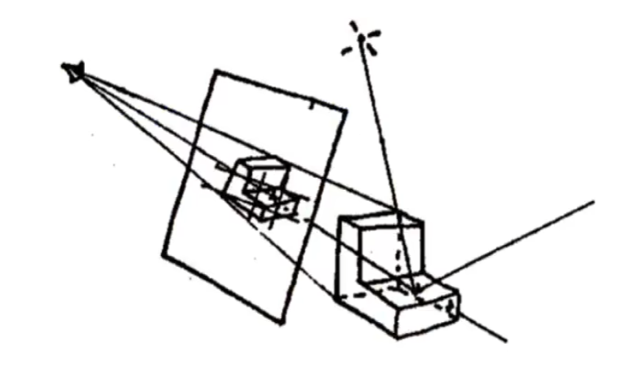
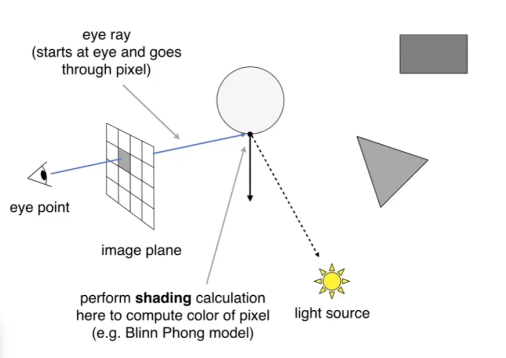
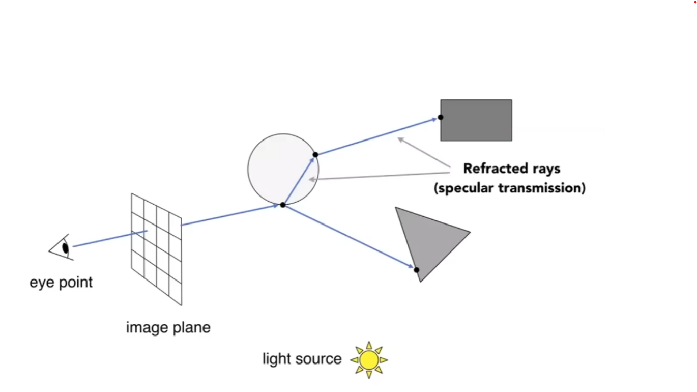
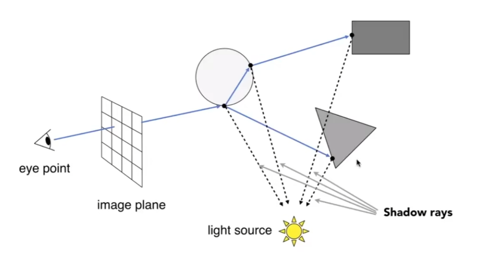
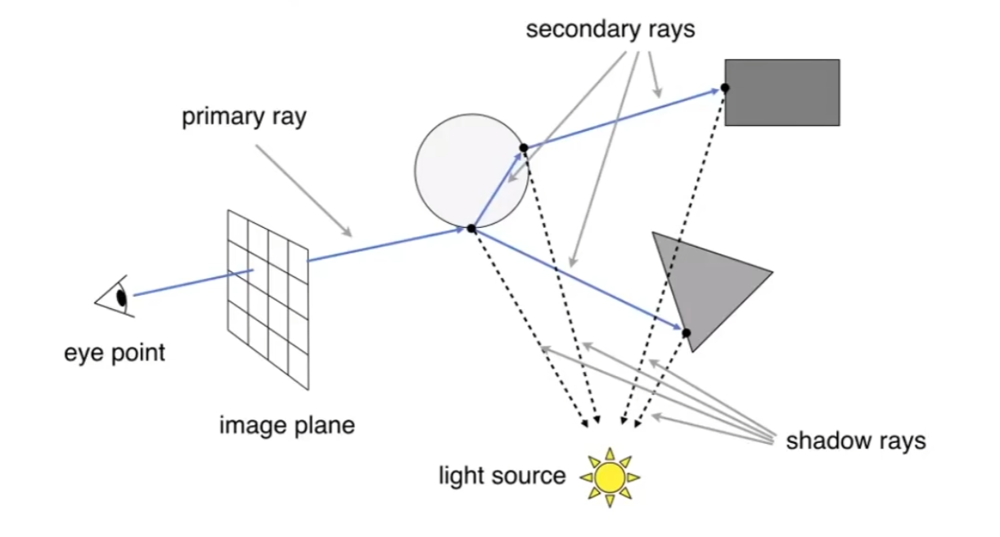
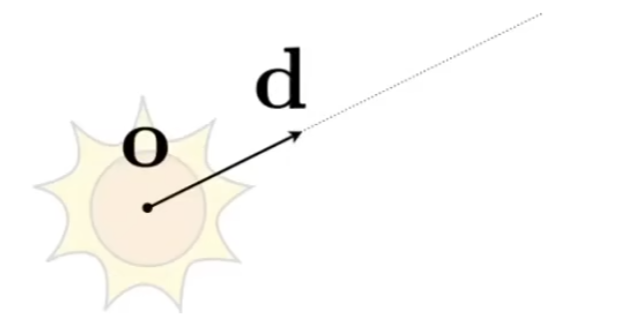
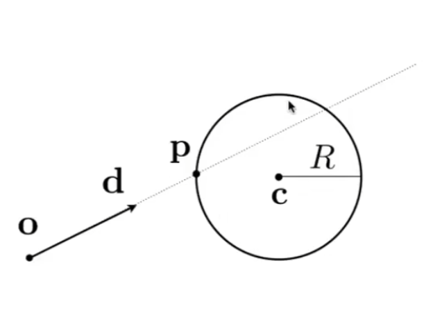
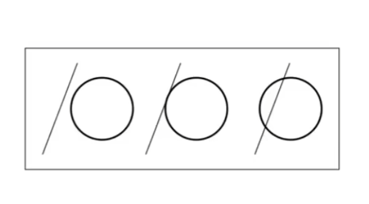
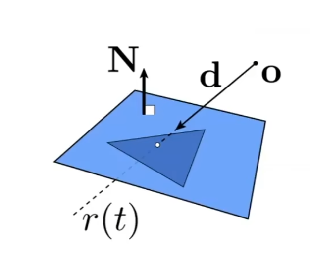
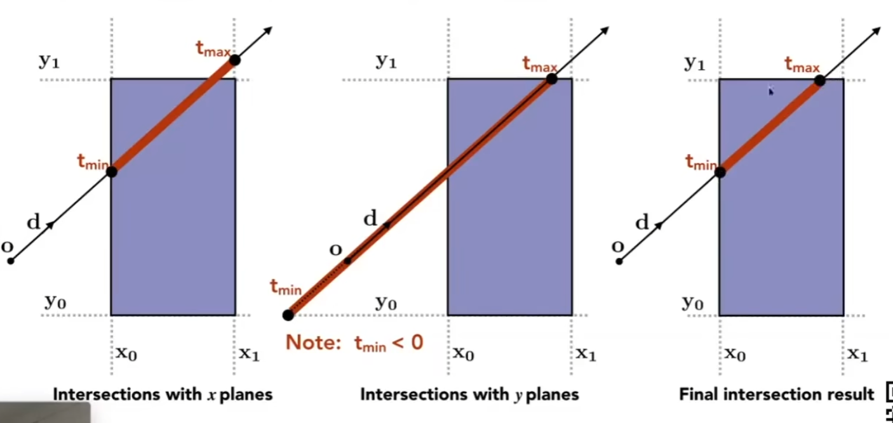

Lec13 Ray Tracing 1 (Whitted-Style Ray Tracing)
光栅化和光线追踪是两种不同的成像方法。
光栅化的问题：无法很好地表现全局效果，比如soft shadows, glossy reflection, indirect illumination等。
光栅化速度很快，但质量不高。
光线追踪与光栅化相反：十分精确，但速度很慢，常用于离线应用，比如电影等。
Light Rays:
什么是光线？
- 光线沿直线传播；
- 光线与光线不会碰撞；
- 光线从光源出发，经过一系列操作后到达眼睛。
应用了光的reciprocity（可逆性）：眼睛发出感知的光线，经过一系列操作后到达光源？
Ray Casting:
假设：相机是点，光源也是点。
从相机开始，假设面前有像素组成的屏幕，相机先和每个像素连线，一个像素得到一条光线，延伸出去，和场景中最近的物体相交（已经解决了深度测试的问题），说明看到了这个物体。
然后物体上的这个点再和光源连线，看看能不能连通，如果能连通，说明这个点被光源照亮了，形成有效光路，否则就是阴影点。
这个时候，观察方向，光源方向和法线方向都有了，就可以着色了。


Recursive (Whitted-Style) Ray Tracing:
我们刚刚谈论的还是光线只弹射一次的情况？
我们来看Whitted-Style Ray Tracing，递归地弹射。
还是从刚刚的过程开始，对于一个像素，先从眼睛到像素，延伸到球，如果球是玻璃材质，则一部分光线进行镜面反射，到达三角形；另一部分光线进行折射，到达长方形：

着色也发生变化，每个经过的点都要和光源连线，因为光源在每个点处都有可能照亮，然后进入光线最终汇聚到这个像素：

最终每个点的光相加，注意光在传播过程中也会有损失，同样如果被挡了就没有光。
综上：

Ray-Surface Intersection
需要解决的第一个技术问题是光线和物体表面的交点。
Ray Equation:
光线的数学定义：起点+方向

$$r(t)=o+td$$
Ray Intersection with Sphere:
球$p$的定义：
$$(p-c)^2-R^2=0$$

$p$和$c$貌似是三维坐标？
如何求交点？交点就是同时满足两个式子的点。
$$(o+td-c)^2-R^2=0$$
要解的是$t$，因此：
$$at^2+bt+c=0$$
其中$a=d\cdot d$，$b=2(o-c)\cdot d$，$c=(o-c)\cdot (o-c)-R^2$
解得：
$$t=\frac{-b\pm\sqrt{b^2-4ac}}{2a}$$

Ray Intersection with Implicit Surface:
推广到光线与隐式表面的交点。
$$r(t)=o+td$$
$$p:f(p)=0$$
因此要解：
$$f(o+td)=0$$
要有实的正的解。
Ray Intersection with Triangle Mesh:
显式呢？考虑三角形网格。
最简单的方法：一个一个三角形求交点，最近的那一个就是。
和一个三角形求交，要么一个交点，要么没有交点。
现在我们考虑光线和单一的三角形怎么求交点？
Ray Intersection with Triangle:
三角形在一个平面内，考虑光线与平面求交，找到交点之后再判断是不是在三角形内。

Plane Equation:
平面可以用一个法向量$N$和一个点$p'$定义。
只要一个点满足：
$$p:(p-p')\cdot N=0$$
那么$p$就在该平面上，这就是表示平面的方程$ax+by+cz+d=0$。
$p$用$o+td$代入：
$$t=\frac{(p'-o)\cdot N}{d\cdot N}$$
然后再判断在不在三角形内就行，之前讲过。
那么有没有办法一下子就判定？
Möller Trumbore Algorithm:
考虑重心坐标：
$$\vec{O}+t\vec{D}=(1-b_1-b_2)\vec{P_0}+b_1\vec{P_1}+b_2\vec{P_2}$$
有三个变量要解。怎么解线性方程组？Cramer法则：
$$\begin{pmatrix} t\ b_1\ b_2 \end{pmatrix}=\frac{1}{\vec{S_1}\cdot\vec{E_1}}\begin{pmatrix} \vec{S_2}\cdot\vec{E_2}\ \vec{S_1}\cdot\vec{S}\ \vec{S_2}\cdot\vec{D} \end{pmatrix}$$
其中：
$$\vec{E_1}=\vec{P_1}-\vec{P_0}$$
$$\vec{E_2}=\vec{P_2}-\vec{P_0}$$
$$\vec{S}=\vec{O}-\vec{P_0}$$
$$\vec{S_1}=\vec{D}\times\vec{E_2}$$
$$\vec{S_2}=\vec{D}\times\vec{E_1}$$
解出来后要判断是否合理，$t,b_1,b_2$都要非负。
Accelerating Ray-Surface Intersection
一个一个三角形判断太慢了，怎么加速？
Bounding Volumes:
用一个相对简单的形状包围复杂的物体，保证物体不超出包围盒。
如果光线连包围盒都碰不到，那么更不可能碰到里面的物体。
Ray Intersection with Box:
最常用长方体。
将长方体理解成三个对面的交集。（intersection of 3 pairs of slabs）
在实际应用中，我们通常用到的包围盒是轴对齐包围盒（Axis-Aligned Bounding Box, AABB），也就是说面一定与正规平面平行，这样计算方便。
因此，AABB可以直接描述为$[x_0,x_1]\times[y_0,y_1]\times[z_0,z_1]$
怎么判断光线和AABB的交点？
我们先看二维的情况。

看和四条直线（形成长方形）的交点
求线段的交集。
从三维的情况下考虑：光线什么情况下算是进入了盒子？三个对面分别考虑，只有都进入了范围才算真正进入；而只要离开任意一对对面，就算真正离开。
因此对于三组对面，各自计算$t_{\min}$和$t_{\max}$，然后求出$t_{\text{enter}}=\max{t_{\min}}$，$t_{\text{exit}}=\min{t_{\max}}$。
如果$t_{\text{enter}}<t_{\text{exit}}$，说明这段时间光线在AABB里，那么光线和AABB有交点！
但在有交点的情况下，还要检查$t$为负数的情况
若$t_{\text{exit}}<0$，说明盒子在光线背后，没有交点
若$t_{\text{exit}}>0$但$t_{\text{enter}}<0$，说明光线的起点在盒子里，显然有交点
综上：
有交点当且仅当$t_{\text{enter}}